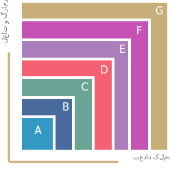

یادگیری
مرور
تمرین
تعیین وضعیت
یادگیری مجدد
معرفی فرایند یاد گیری
هر درس از ۱۰ الگوی اصلی و ۲۰ الگوی کمکی تشکیل شده است که نسبت به
گام و مرحله آموزشی
شما داراری
محدودیت
کلمه و موضوع آموزشی می باشد
معرفی فرایند یاد گیری

هر درس از ۱۰ الگوی اصلی و ۲۰ الگوی کمکی تشکیل شده است که نسبت به
گام و مرحله آموزشی
شما داراری
محدودیت
کلمه و موضوع آموزشی می باشد
معرفی فرایند مرور
الگوها لغات و نکات درس جدید را با
حالت های مختلف
که به صورت علمی و بر اساس عملکردهای بخش های مختلف مغز انسان طراحی شده است مجددا مرور می کنید
معرفی فرایند تمرین
پس از پایان مرور و تکمیلی فاصله زمانی درس های قبلی که به ترتیب در
جعبه های سه گانه
فراخوانی شده است را ترجمه و به انگلیسی تایپ می کنید
معرفی فرایند تمرین
با توجه به الگوریتم هوشمند اینگلوست میزان تسلط شما به الگو ها تشخیص داده شده و در فرآیند بعدی جهت اطلاع و بررسی بیشتر نمایش داده می شود
معرفی فرایند تعیین وضعیت
بعد از یادگیری
ده درس اول
در این فرایند میزان تسلط کلی و نهایی خودتان نسبت به الگوهای درس های قبلی را بررسی و تعیین وضعیت می کنید
معرفی فرایند تعیین وضعیت
سیستم هوشمند اینگلوست به صورت خودکار و جهت افزایش دقت شما الگو ها را نسبت به درصد تسلط شما به سه رنگ متمایز تفکیک می کند
معرفی فرایند یادگیری مجدد
الگوهایی که مجددا به چرخه آموزشی اضافه کرده اید را مشاهده نموده و
نسبت تعداد الگو ها
درس جدید به بعد از تکمیل این فرایند موکول می گردد